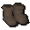
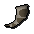

")
Faruq's Tools
Introduction

Faruq, however, knows precisely what he is selling: tools for wandering adventurers to turn into games - and whatever games they compose are entirely up to them. While several of his devices may seem custom-made for specific purposes, they are open enough in design to allow the most creative of adventurers to work their imaginative magic.
Faruq's Tools
 All of Faruq's tools are available for bargain prices, so it's well worth investing in several of them - or even all of them, if you're so inclined. For a full explanation of how to use the items, purchase a copy of Faruq's Toolonomicon.
All of Faruq's tools are available for bargain prices, so it's well worth investing in several of them - or even all of them, if you're so inclined. For a full explanation of how to use the items, purchase a copy of Faruq's Toolonomicon.
| Tool | Functions |
 Dice bag |
Can be set to supply you with dice rolls for one or two six-sided dice, a four-sided die, an eight-sided die, a ten-sided die, a twelve-sided die, a twenty-sided die, or two ten-sided dice (giving you a result from 1-100). |
Magic skullball |
Has three settings: yes or no, suggest an activity, or pick a random colour. |
   Rings of seeking * |
These rings come in three forms: a ring that seeks, a hiding ring and one ring that is both. A seeking ring alerts you when a hiding ring is nearby; you will not be told which of your clan-mates has the hiding ring - or how far away the ring is - as it has been left for you to work out. |
 Marker seeds |
Can be used to plant markers. They can be left as simple markers, or can have directions attached. |
 Ticker |
Click it to add one to the tally - it couldn't be simpler! |
Empty bag caller * |
The empty bag caller can be used to tell your clan that you're not wearing anything, that you only have the caller in your backpack, or both. |
 Timepiece |
It's a stopwatch! |
|  Racing boots * |
Wearing these boots can immobilise you before a race starts, making sure everyone wearing the boots starts at the same time. |
|  Starting horn * |
This mystical horn will summon an imp to announce the beginning of a race (at the end of which, anyone in your clan wearing racing boots will be free to move). |
 Voting hat * |
Can be turned inside out to change it from red to blue or vice versa. |
 Orb of counting * |
A mysterious orb that enjoys little more than counting red and blue hats. |
 Orb of oculus |
A weighty orb that changes your view of RuneScape. Useful for machinima video makers. |
* Can only be used if you are in a clan.
Orb of Oculus

To use the orb, make sure it is equipped, right-click it in your worn inventory, and select 'Gaze Into'. This will move you into the 'Aim mode' of the orb of oculus. Note that your character cannot move while using the orb of oculus.
There are three modes available from the orb, each offering different methods of moving the camera and changing its focus. These modes are Aim, Focus and Fine Control. These modes share the following abilities:
- Exit - To stop viewing through the orb, press Esc.
- Change to X Mode - Press F1 to move from one mode to another. Switching between modes will cancel any saved positions that you may have.
- Toggle Chat Window - Press F2 to toggle the chat window on and off. You can then type messages that will appear in the game window.
- Toggle Help Window - By pressing space bar, you are able to remove the 'help' panel from the game window, the compass in the top-right and the 'Positions Stored' pane. This allows you to take an unimpaired shot for your video.
- Move Camera North/South/East/West - By pressing the W, S, A and D keys, you can shift the position of the camera in any of the four cardinal directions. The 'focus' of the camera will shift with it.
- Move Camera Up/Down - By pressing the Q and E keys, you can shift the position of the camera upwards or downwards. The 'focus' of the camera will shift with it.
- Rotate View - Using the arrow keys keeps the camera in the same position, but rotates your view about a static point. Your camera will rotate 20 times before returning to its starting position.
- Save Camera Position, Replay Saved Positions, Clear Saved Positions - The F6, F7 and F8 buttons enable you to save a series of camera angles and then replay them in one flowing tracking shot. Simply use the Aim and Focus Mode to find a camera position you like, and then save it using the F7 button. You can save up to 8 saved camera positions and then replay them using the F8 button. You may clear the saved positions (displayed in the bottom-left of the screen) at any time by pressing F6.
- Move Camera North/South/East/West - By pressing the W, S, A and D keys, you can shift the position of the camera in any of the four cardinal directions. Your camera will continue to focus on the same point.
- Move Camera Up/Down - By pressing the Q and E keys, you can shift the position of the camera upwards or downwards. Your camera will continue to focus on the same point.
- Move Aim Point North/South/East/West - Using the arrow keys moves your focus point in any of the four cardinal directions.
- Save Camera Position, Replay Saved Positions, Clear Saved Positions - The F6, F7 and F8 buttons enable you to save a series of camera angles and then replay them in one flowing tracking shot. Simply use the Aim and Focus Mode to find a camera position you like, and then save it using the F7 button. You can save up to 8 saved camera positions and then replay them using the F8 button. You may clear the saved positions (displayed in the bottom-left of the screen) at any time by pressing F6.
- Move Camera North/South/East/West - By pressing the W, S, A and D keys, you can shift the position of the camera in any of the four cardinal directions. The 'focus' of the camera will shift with it.
- Rotate Camera - By pressing the arrow keys, you can rotate the camera around your chosen focal point. Your camera will continue to focus on that same point.
Note: The orb of oculus may be taken into the dungeons of Daemonheim.

More articles in
Miscellaneous Guides
|
|
|
Further Help
If this article does not help you, you may find the following sections of the RuneScape site helpful:
|
|